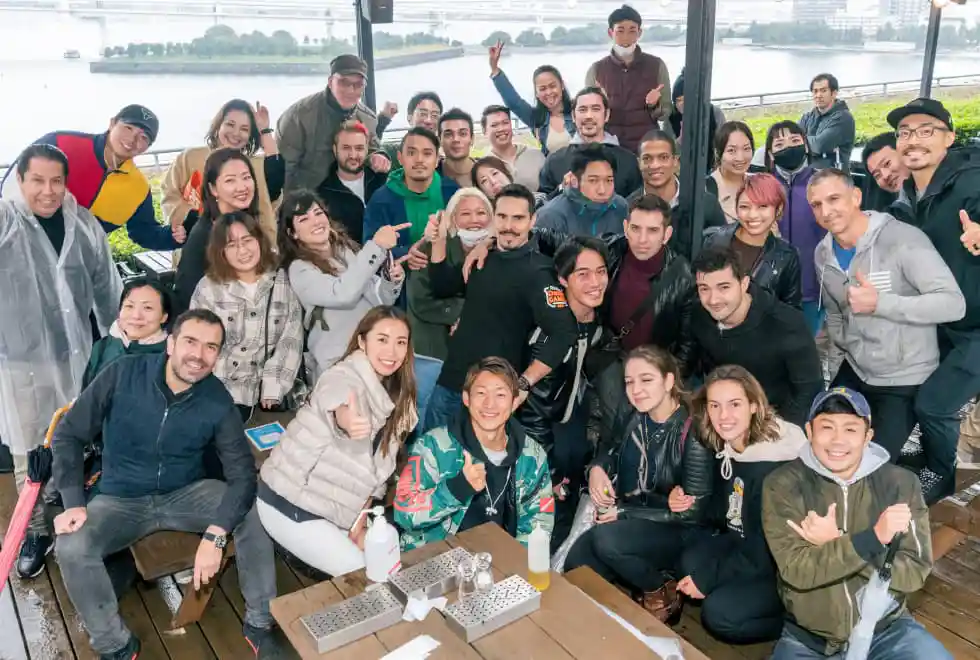
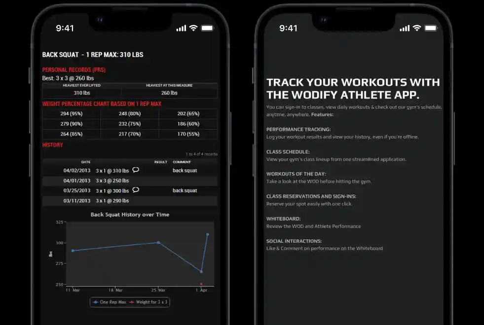
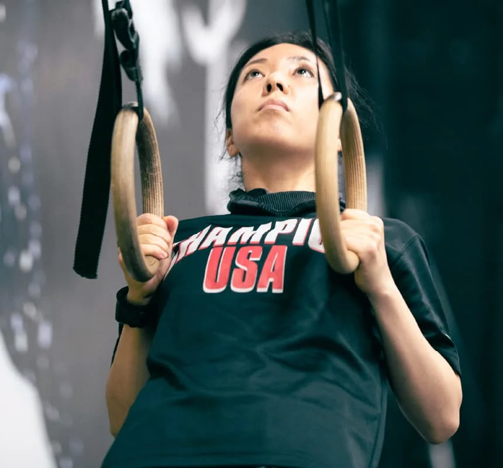
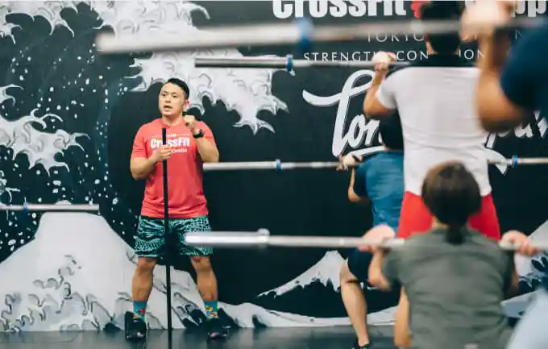
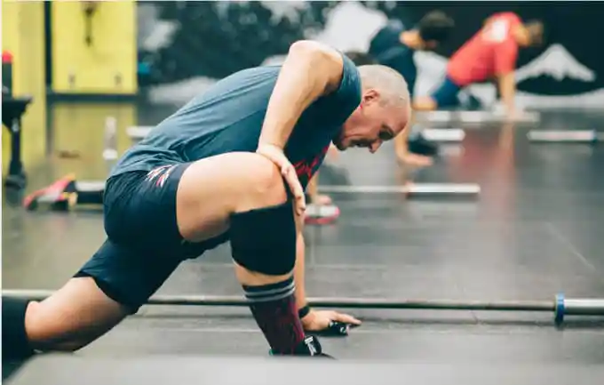
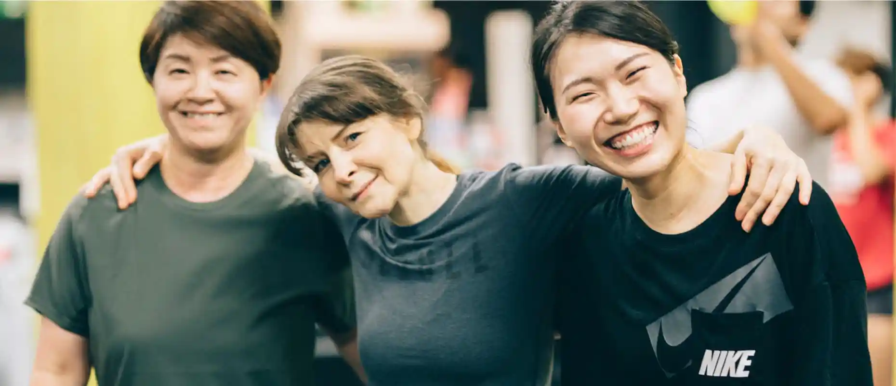

ABOUT CROSSFIT
CrossFitとは
ATTRACTION
CrossFitの魅力
やり遂げる達成感があるから、
夢中になって打ち込める。
CrossFitは、世界中で支持されるアメリカ発祥のトレーニングです。
日常生活で繰り返し行う動きをベースに、短時間・高強度のトレーニングを行い、基礎身体能力を高めていきます。
ダンベル、バーベル、メディシンボール、スクワット、縄跳び、ランニング、バイク、ローイング、鉄棒。
数百種類の動作を組み合わせ、毎回異なるプログラムを行うことで、普段の何気ない動作がスムーズに、そして力強く変わっていきます。
できなかったことができるようになる達成感や、自分を追い込み、汗を流す爽快感。
苦しい時に励まし、高め合う仲間との一体感。
CrossFit Roppongiには、飽きずに楽しくトレーニングできる環境が整っています。
The joy of accomplishment will leave you coming back for more.
CrossFit is a training method that originated in the United States with practitioners all over the world.
CrossFit uses a base of functional, everyday movements to provide short-term, high-intensity training that improves your fitness.
Train with dumbbells, barbells, medicine balls, jump ropes, running, biking, rowing, pull-ups, and more.
By combining hundreds of movement variations into programs that differ every session, CrossFit helps train you to be more smooth, graceful, and powerful when performing functional, everyday movements - both in and out of the gym.
Experience the accomplishment of doing what you couldn't do before. Feel the exhilaration that comes from pushing your limits.
Make new friends who will both share your successes, as well as encourage and support you through difficult times.
At CrossFit Roppongi, we offer an environment where training is always new and interesting!
CrossFit Roppongiの4つの特長
Four Features of CrossFit Roppongi
-
定期的にイベントを開催、
メンバー間の親交を深めていますCrossFit Roppongiは、BBQや山登りなどメンバー同士が交流できるイベントを開催しています。目標を共有できる仲間が増え、コミュニティが広がることで、ライフスタイルもより楽しく変化していきます。
Regular Events
Build friendships with other members
CrossFit Roppongi holds barbecues, hikes, and many other fun events where members have the opportunuity to get to know each other. Join a vibrant, growing community and find new friends that share your goals. Lifestyle change has never been easier!
-
世界最大のフィットネス競技、
クロスフィットオープン参加者国内最多クロスフィットオープンは、各ボックスに所属しているクロスフィッター達がしのぎを削るCrossFit界のビッグイベントです。CrossFit Roppongiでは、実績のあるコーチ陣が競技の内容や対策、練習方法などを指導します。
The Most CrossFit Open Participants in Japan
The CrossFit Open is a big event in the CrossFit world. CrossFitters from various Boxes come to compete in the world's largest fitness competition. At CrossFit Roppongi, our proven coaches will help prepare you for the contest with information, strategies, training methods, and more. -
運動量をデータ化
アプリで目標達成をサポートします計測・記録・確認が目標達成への近道です。アプリを使って運動量を記録し、成果を振り返ることで、持続性やモチベーションを高めます。また、クラスの予約や変更などもアプリで簡単に管理することができます。
Track Your Training and Achieve Your Goals With Our App
Shortcut your goals by measuring, tracking, and reviewing your training. Stay consistent and motivated with our app, which lets you track your training and review your accomplishments. The app also lets you easily book, change, and manage your classes.
-
目的次第でカスタマイズ可能な
パーソナルトレーニングCrossFit Roppongiでは、完全予約制のパーソナルトレーニングも行っています。パフォーマンス向上や苦手分野の克服など、目的に合わせてマンツーマンで指導します。ご家族、ご友人と一緒に少人数でのプライベートトレーニングも可能です。
※月会費とは別途、チケットをご購入いただきます。Personal Training Customized Toward Your Goals
CrossFit Roppongi proudly offers personal training by appointment only. From performance improvement to overcoming weak points, our coaches provide one-on-one guidance to help accelerate you on the path to achieving your goals. We also offer private training in small groups of family or friends.
* Requires ticket purchases separate from the monthly membership fee.

FLOW
トレーニングの流れ
正しく鍛える。
60分間のファンクショナルトレーニング。
Train the right way.
60 minutes of functional fitness training.
-
ウォームアップ
10MIN
その日のプログラム(WOD)に合わせた、ストレッチや体幹トレーニング、有酸素運動などを取り入れます。軽く息が上がる程度に体を温め、本格的なトレーニングへの準備を行います。
Warm-Up
We provide a menu of dynamic stretching, core training, and low-intensity aerobic work to effectively prepare you for each day's strength training and WOD (workout of the day). -
スキル・
ストレングス10MIN
一人ひとりのレベルに合わせて、動きの変更、負荷の調整を行います。器械体操やウエイトリフティングなど、動作のメカニズムを習得するための練習を行います。
Skills & Strength
Movements and loads are scaled according to individual abilities. Practice and learn the movements used in a variety of sports, such as gymnastics, weightlifting, and more.
-
WODワークアウト・オブ・ザ・デイ
30MIN
CrossFitのメインワークアウトの時間です。さまざまなエクササイズを組み合わせ、自分にとって少しきつい負荷をかけながら、その日のプログラム（WOD）に挑戦します。
WOD
CrossFit's main workout of the day (WOD) is a combination of strength and aerobic exercises that will push and challenge you to expand your limits. -
クールダウン
10MIN
疲労が蓄積して筋肉が固くならないよう、使った筋肉を緩めて、ゆっくりと無理のない範囲で、筋肉をほぐします。
Cooldown
Decrease post-workout muscle soreness and stiffness by gently and safely stretching the muscles used during the workout.
VOICE
お客さまの声
CrossFit Roppongiに通うお客さまの声
What CrossFit Roppongi members are saying
-
Sさん
30代 ｜男性
的確な指導で
ゴールに近づける。
トレーニングを習慣化できています。通い始めて3年半、最も満足していることは、経験豊富なコーチ陣に自分の現状やゴールに合った的確な指導を受けられることです。自分にとって少しきつめの負荷をかけるトレーニングもありますが、その分達成感があります。
また、たくさんのメンバーと仲良くなり、トレーニングが一層楽しくなりました。「苦しい」というよりも「リフレッシュ」に近い感覚なので、継続して通うことができています。 -
Eさん
50代 ｜ 女性
ダイエットと体力UPに成功、
自分に自信が持てるようになりました。50代になり、ダイエットと体力アップを目的に入会しました。30年ぶりの運動で不安もありましたが、私に合ったプランを的確に指導いただき、目標を達成することができました。今では、新たな目標として30代のプロポーションを目指して頑張っています。
今まで長続きしなかった運動を習慣化できていますし、なによりCrossFit Roppongiに出会って、自分に自信を持てるようになったことがとても嬉しいです。 -
Yさん
30代 ｜男性
ただ鍛えるだけじゃない、
励まし合える仲間ができる。コーチの皆さんは知識が豊富で、一人ひとりに合わせて丁寧にアドバイスをくれます。トレーニングの合間にコーチや他のメンバーと気軽に話ができるので、雰囲気がアットホームなところも魅力的です。
CrossFit Roppongiのメンバーは多種多様なバックグラウンドを持った方々ばかりで、とても楽しいコミュニティです。
ただ鍛えるだけでなく、たくさんの仲間と出会えるので、新しいライフスタイルを築くことができました。 -
Dさん
20代 ｜女性
The first and the main thing why I love this place is our strong “family”, you will not find anywhere so friendly, open minded , supportive community, from coaches to each individual member of our team - everyone are always ready to give you a hand, explain or just give an advice. Even we are all different levels, we are sharing and handling all together.No less important is the atmosphere, after a hard day at work, you come here and literally relax and forget about all the problems, there is no time to think, everyone are pushing, and you push together with everyone. 負けない！

さぁ、CrossFitを
体験しよう
体験レッスンでは、あなたのレベルやコンディションに合わせた
効果的な60分のトレーニングを¥3,300でご体験いただけます。
世界中で支持されるCrossFitを、ぜひ体感してください。
Try CrossFit
We offer 60-minute trial lessons that are custom-designed to your current level and condition.
For just ¥3,300, you'll see what people all over the world are talking about. Come try the CrossFit experience!
-
DROP IN
Drop-in training for experienced users
Drop-ins are available for those with previous CrossFit experience.
SEE MORE -
SPARTAN TRAINING
Training for the Spartan Race, the world's largest obstacle race
Our bootcamp-style Spartan class will challenge your stamina and cardio fitness, as well as help you prepare for your next Spartan Race with obstacle-related strength and skill training. No experience necessay and all levels are welcome!
SEE MORE